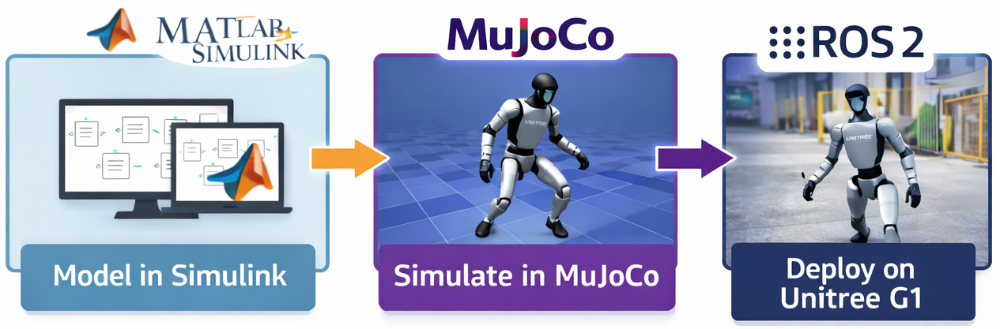

Unified Sim2Real Development Pipeline

Authors

Nicanor Quijano
Google Scholar
Jorge Lopez Jimenez
Google Scholar
Carlos Francisco Rodriguez
Google ScholarAbstract
Control research on humanoid robots requires environments where control strategies can be designed, tuned, debugged, validated, and transferred to real hardware with minimal friction. For commercial platforms such as the Unitree G1, this process is often fragmented across separate tools for modeling, simulation, communication, visualization, and deployment, slowing down controller development and experimental iteration. This work presents a MATLAB/Simulink-based Sim2Real framework for the Unitree G1 that integrates MuJoCo and ROS 2 into a unified workflow for control-oriented research. The framework is organized around a modular Variant Subsystem that switches between a MuJoCo simulation backend and a ROS 2 real-robot backend while preserving compatible interfaces, enabling reuse of high-level control logic, monitoring, and system instrumentation across both domains. As a representative example, a standard ankle motion command task was validated both in simulation and on the real robot. The proposed framework establishes a practical model-based environment for implementing and evaluating control strategies on the Unitree G1, while providing an extensible basis for future estimation, stabilization, perception, and humanoid control modules.
Key Contributions
Unified Workflow
Integrates MATLAB/Simulink, MuJoCo, and ROS 2 within a single model-based development environment.
Control-Oriented Design
Supports the implementation, tuning, debugging, and validation of humanoid control strategies in a structured block-based workflow.
Sim2Real Transfer
Preserves compatible interfaces between simulation and the real robot, reducing the gap between controller design and hardware execution.
Research Extensibility
Provides a foundation for future estimation, stabilization, perception, and advanced humanoid control modules.
Representative Example: Ankle Motion
As a representative example, a standard ankle motion command task was validated in MuJoCo and executed on the real Unitree G1 through the same framework structure.